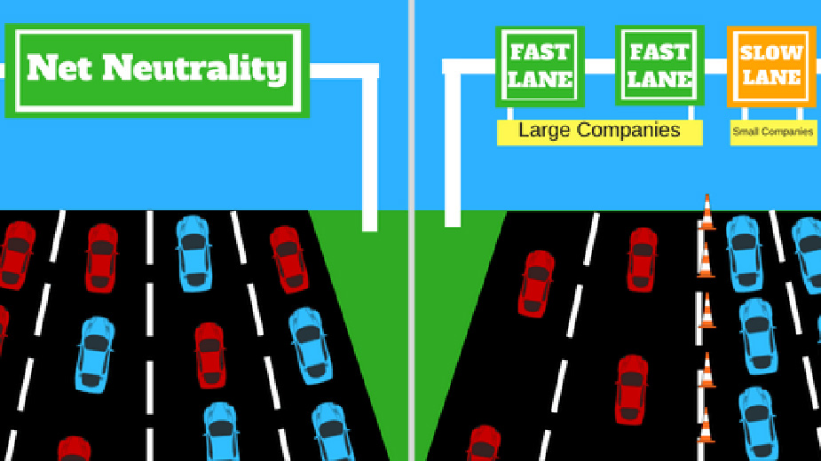

Le déploiement de la 5G s'organise tellement rapidement, poussé par l'industrie des télécoms, que certains effets et risques sont peu pris en compte. Cette section en détaille certains.
Prédictions météo
Comme présenté rapidement dans la section "What Really is 5G?", la 5G utilise les ondes millimétriques. Aussi la Commission fédérale des communications (FCC) a lancé la vente des accès à la fréquence 24GHz aux fournisseurs de réseau mobile. Or cette bande est très proche des 23.8GHz, fréquence sur laquelle la vapeur d'eau émet un faible signal essentiel aux satellites météo pour récupérer les données qui sont fournies aux algorithmes de prédiction météo. Un signal 5G déployé trop près de cette fréquence risque de parasiter et d'occasionner la perte de 77% des données récoltées par ces satellites. De plus, la FCC pourrait également mettre aux enchères des fréquences proches des 36-37GHz, utilisées pour la pluie et la neige ou des 50.2-50.4GHz utilisés pour les relevés de température atmosphérique.
Neil Jacob, le directeur de l'Agence américaine d'observation océanique et atmosphérique a estimé devant le parlement américain qu'un déploiement de la 5G dans ces conditions pourrait réduire l'exactitude des prédictions météos de 30% et renvoyer la qualité des prédictions à celle de 1980. Par exemple, la prédiction d'une tempête ou d'un cyclone pourrait mettre trois jours de plus, un délai essentiel pour protéger et alerter les populations.
Sources
Santé
La Commission européen et la Federal Communications Commission (FCC) aux États-Unis se sont récemment opposées à une potentiel pause dans le déploiement qui permettrait de juger des effets de la technologie sur la santé. Les risques sanitaires liés à la 5G ont pourtant beaucoup était soulevé sur Twitter. Pour l'OMS, il existe 5 niveaux pour estimer un potentiel cancérogène:
- 1 - cancérogènes
- 2 A - probablement cancérogènes
- 2 B - cancérogènes possibles
- 3 - inclassables
- 4 - probablement pas cancérogènes
Cependant cette classification est remise en question, notamment par Susan Crawford, une professeure à Harvard. Face à la pétition lancée par des milliers de scientifiques qui réclament un moratoire sur le déploiement de la 5G, elle a décidé de s'intéresser aux questions de santé. Elle commence par s'attaquer au protocole qui a permis la classification des ondes émises. En effet, il se fonde sur une "exposition moyenne" et le fait que les radiations chauffent les tissus humains. Ce protocole date de 1996 et s'appuie sur des recherches vieilles de trente ans effectués par un groupe privé. De plus, la chaleur n'est pas le seul facteur capable d'interférer avec le fonctionnement normal des cellules humaines. Et avec la 5G qui ne propose plus une diffusion uniforme mais focalise localement la puissance du réseau, induisant ainsi des pics de radiations, il n'est pas forcément pertinent de juger des risques avec l'exposition moyenne Un protocole faussé.
La professeure termine avec un exemple inquiétant: l'armée américaine aurait mis au point une arme destiné à contrôler les foules utilisants les ondes millimétriques sur lesquelles se fondent la 5G. «Les glandes sudoripares juste en dessous de la peau servent d'antenne en réponse aux ondes courtes à très hautes fréquences qu'utilisera la 5G», explique-t-elle.
Les doutes qu'elles exposent sont certes un peu extrêmes, mais les interrogations sur la pertinence du protocole et la rapidité avec laquelle les autorités des pays ont écarté les questions sanitaires, pris dans une course au progères rendu inarrêtable accéléré par les intérêts financiers et industriels posent questions.
Sources
- Classification des substances cancérogènes par le CIRC
- Wired: 5G and the Health Effects of Cell Phones
Neutralité du web
La neutralité du web est le principe selon lequel les fournisseurs d'accès internet doivent traiter tout le traffic de façon équivalente, ce qui empêche de ralentir ou bloquer l'accès d'utilisateurs spécifiques ou de faire payer des forfaits différents pour des usages différents. Cela permet d'assurer l'autonomie et d'empêcher une segmentation dans l'utilisation d'internet.
Cette neutralité est assurée légalement en Union Européenne depuis 2016. Cependant la 5G vient la remettre en cause et induit une réforme de cette loi. En effet le principe de network slicing, essentiel au fonctionnement optimal de la 5G, partitionne le réseau selon ses différents usages. Aussi les télécoms vont certainement exiger la possibilité d'introduire différents forfaits pour les usages de la bande.
Thomas Lohninger, le directeur exécutif de epicenter.works, a publié un rapport sur la neutralité du web en union européenne qui offre un point de vue opposé à celui de l'industrie du télécom. Pour lui la 5G est un simple développement technique, une évolution et pas une révolution. Cependant l'industrie télécom cherche à la vendre comme tel. Le problème avec l'évolution de la loi, réside dans la demande des télécoms de classer la 5G comme un service spécialisée, exempt du respect de la neutralité du web. Il explique que ces services spécialisés sont un point faible majeur de la régulation, qui permet d'outrepasser complétement le principe de neutralité. Une des dérives exposées est par exemple Google qui pait pour que Youtube devienne un service spécialisé, il faudrait alors souscrire à un forfait spécial pour y accéder. Il souligne que les grandes promesses autour de la 5G ne sont pas basés sur la réalité, et que nous ne devrions pas compromettre nos libertés pour une technologie incertaine. La 5G devrait s'adapter à la loi mais nous tendons plutôt vers une situation où la loi s'adapte à la technologie.